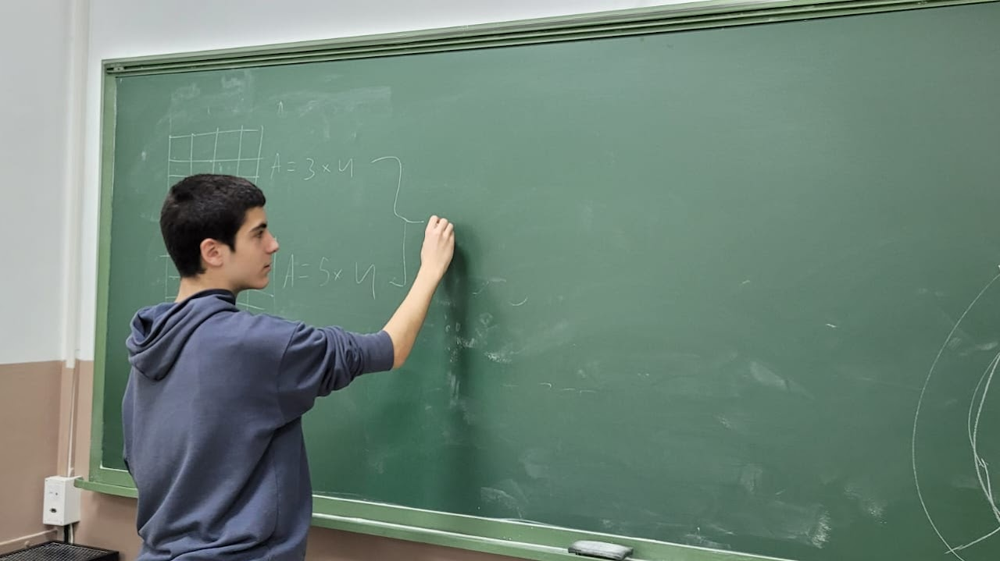
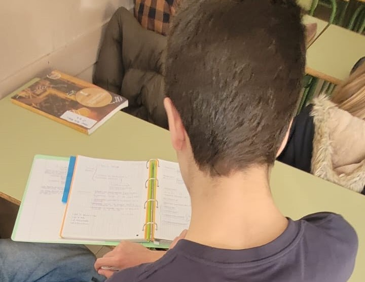
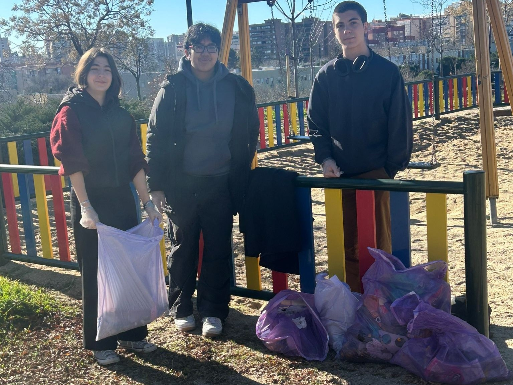
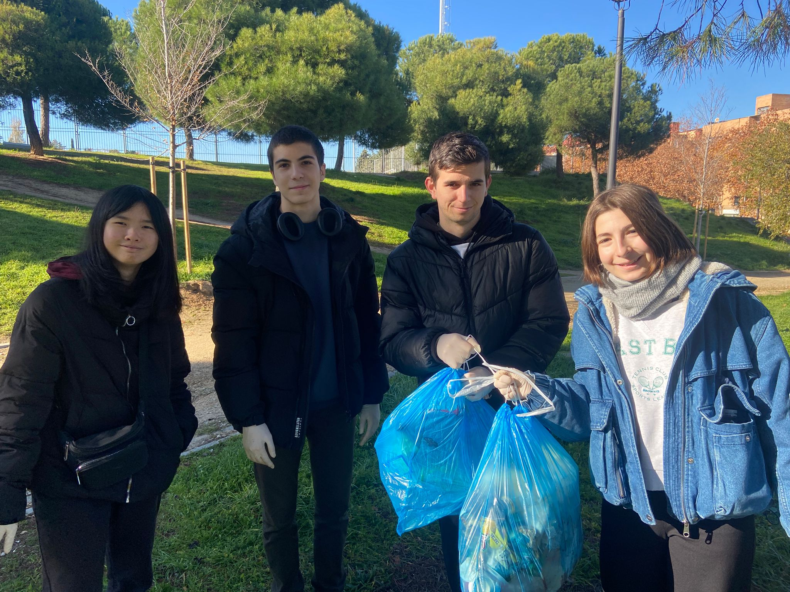

Ayuda MutuaLlevo con otros cuatro compañeros un taller de voluntariado, ofrecemos ayuda académica a alumnos de ESO de martes a jueves de 4:00 a 5:30. Como los jueves llevo el Seminario de Matemáticas, voy los martes y los miércoles, los martes con dos compañeros y los miércoles yo solo. Normalmente los alumnos trabajan por su cuenta, y nosotros les asistimos explicando ejercicios concretos, repasando temario que no tengan claro o ayudándoles a hacer resúmenes o completar apuntes. |
|||||||
|---|---|---|---|---|---|---|---|
 |
 |
||||||
Algunas fotos de ayuda mutua: explicando el patrón en un problema de sucesiones, y repasando temario de literatura. |
|||||||
EcommunityEn mi segundo año de BI decicí incolucrarme en otro proyecto de voluntariado, Ecommunity. Cada dos semanas recogemos basura en las calles de madrid, normalmente en parques públicos o zonas transitadas que suelen tener muchos residuos. Sin ser un trabajo agradable, es especialmente gratificante por el cambio que puede ver uno mismo en el entorno, además del apoyo que nos suslene dar los transeuntes. |
||||||||
|---|---|---|---|---|---|---|---|---|
 |
 |
|||||||